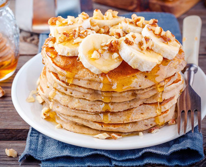

бананові оладки
Перебити в блендері банан з молоком, додати муку та розпушувач. Обсмажити з двох сторін. Подавати з сиропом або йогуртом та ягодами.
- банан (2шт.)
- вівсяна мука(2-3 ст.л.)
- рослинне молоко(0.5скл.)
- розпушувач (1ч.л.)
Перебити в блендері банан з молоком, додати муку та розпушувач. Обсмажити з двох сторін. Подавати з сиропом або йогуртом та ягодами.